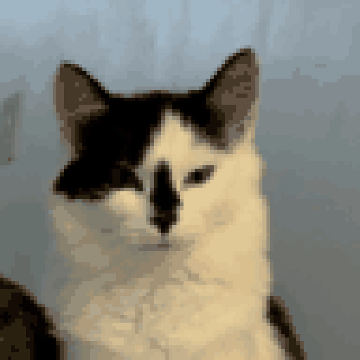
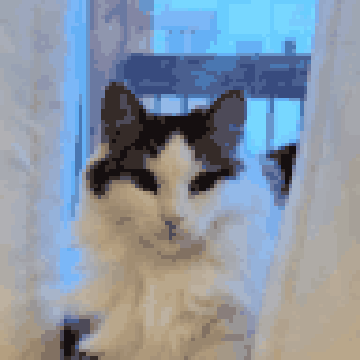
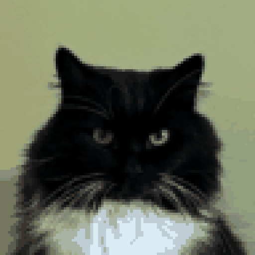

Main Floor
Case: 0/3 cats cracked
E: Interact
Saved
WASD / Arrows: Move
E / Space: Interact
H: Hint Q: Case Log P: Pause
Marice & Cats
The Great Treat Heist
The treat jar is empty. Three suspects. Zero remorse.
Interrogate the cats. Follow the crumbs. Crack the case.
Interrogate the cats. Follow the crumbs. Crack the case.
🔐 Enter Door Code
Case Closed!



Marice: "Verdict: guilty on three counts of being adorable. Sentence: dinner on time, forever — and snuggles, effective immediately."
The Great Treat Heist is solved. Detective Marice settles into bed with the witness, the muscle, and the mastermind curled close — all three serving their snuggle sentence, purring without remorse.
⏱ --:--
🐾 Toys: 0/3
📖 Diary: 0/4
❤ Pets: 0
⏸ Paused
🕵️ Case Log
Interview the witness: Alice
⏳
Crack Olive's alibi
⏳
Get Beatrice's confession
⏳
Recover the stashed toy loot
0/3
Recover Marice's diary pages
0/4
⚙️ Settings
70%
50%